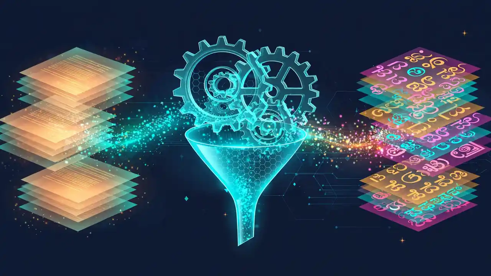

2.8 trillion tokens for 1.2 billion people: NVIDIA and IIT Madras open the recipe behind the biggest Indic pretraining corpus
Indian language AI has a data problem, and NVIDIA and IIT Madras just attacked it at scale. The two introduced Nemotron-pretraining-Indic-v1 today — roughly 2.8 trillion synthetic tokens across 22 Indian languages — and, unusually, open-sourced the entire GPU-accelerated pipeline used to generate them, so anyone can reproduce or extend the recipe.
- Who: NVIDIA, working with IIT Madras and its AI4Bharat lab, led by Mitesh Khapra.
- What: Nemotron-pretraining-Indic-v1 — approximately 2.8 trillion tokens of synthetic pretraining data across 22 Indian languages.
- When: announced October 16, 2026; the corpus releases soon, the open data-generation pipeline is available now.
- Scale: 2,601.0 billion native-script tokens plus 224.6 billion romanized tokens (Gemma-4 tokenizer), in 34 language-script configurations.
- Quality bar: an MQM-inspired rubric retains only translations scoring at least 75 out of 100; a feedback-and-repair loop recovered 438.4 billion tokens.
- Proof it helps: Indic continued pretraining for Nemotron 3.5 Super VL (10 billion of 100 billion tokens) lifted five Indic benchmarks by 4.98–9.82 percentage points.
The data gap behind the release
Mitesh Khapra, who heads AI4Bharat and made the 2025 TIME100 AI list, has named the core problem: Indian language technology trails English because “we do not have enough data for Indian languages.” Nemotron-pretraining-Indic-v1, introduced today by NVIDIA with IIT Madras and its AI4Bharat lab, is their answer — and they paired it with the recipe, not just the result.
The 22 languages are the ones listed in India’s Constitution: the first languages for 97% of Indians, nearly 1.2 billion citizens at the 2011 Census. AI4Bharat’s earlier Sangraha corpus helped lay the foundation for open Indic language-model research; the joint release, in the authors’ words, “represents a substantial expansion of the open synthetic Indic training data that will be available to the community.”
What’s inside 2.8 trillion tokens
The headline number breaks down into 2,601.0 billion native-script tokens and 224.6 billion romanized tokens, counted with the Gemma-4 tokenizer. The counts include translations and script variants of shared sources — they are not 2.8 trillion unique English documents.
The distinction between the two matters. Native-script means the text uses the language’s own writing system — but it is still translated from English. Romanized means Indic-language text written in Latin script, which is not the same as an English translation. Twelve languages — Bengali, Gujarati, Hindi, Kannada, Malayalam, Marathi, Nepali, Odia, Punjabi, Tamil, Telugu, and Urdu — get both forms; the remaining ten (Assamese, Bodo, Dogri, Kashmiri, Konkani, Maithili, Manipuri, Sanskrit, Santali, Sindhi) are native-script only. Across 34 language-script configurations, the corpus brings a broad mix of curated English material — mathematics, code, and question-answer content — into Indian languages, so future models can explain technical concepts, work through problems, and answer questions in those languages.

The open recipe
To build the corpus, the teams started with documents from 15 Nemotron-CC-v2 subsets — web text, question-answer material, mathematics, code, and other specialized content — and ran them through NeMo Data Designer, NVIDIA’s open-source framework for generating synthetic data. The workflow for twelve languages: translate English documents, assess translation quality, repair low-scoring outputs, and convert a subset of accepted translations into Latin script.
The translator is Gemma-4-31B-it, chosen after comparing models on complete documents, with prompts that distinguish prose to translate from content to preserve — code, equations, URLs, formatting. Documents are translated in full so the model can use context across paragraphs, tables, and equations. Then the same model grades its own work: a rubric inspired by Multidimensional Quality Metrics (MQM), an open framework for classifying translation errors, scores each output on meaning, fluency, terminology, style, and formatting. Only outputs scoring at least 75 out of 100 are kept; lower-scoring ones get feedback-guided repairs and are reassessed. That repair loop alone recovered 438.4 billion tokens already counted in the total.
Romanization is deliberately a two-step process: accepted native-script translations are converted into Latin script and checked against their native-script input, separating translation from script conversion. In the teams’ initial human comparison, this produced fewer hallucinated additions and less residual English than generating romanized text directly from English.
The other ten languages use a separate workflow built around Indic Translate, a document-level translation model for English and 22 Indian languages from Bodhan AI, a nonprofit center for AI in education incubated at IIT Madras. There are special cases: longer Santali documents are translated in overlapping windows and reconstructed; Manipuri is translated into Bengali script before converting to Meitei Mayek, its native script. These workflows keep the 75-out-of-100 bar but skip the feedback-based rewriting, producing native-script data only.
Provenance is unusually careful: every record traces back to a curated source document, each output is checked against its input, and source identifiers are retained through the pipeline — so the synthetic text stays grounded in real information and anyone can audit it.
And the recipe itself is open now. The Nemotron Bharat translation plugin for NeMo Data Designer ships the translation and evaluation prompts, optional feedback-based rewriting, document windowing, and script-remapping support. Teams can use the corpus directly, adapt the prompts and quality checks, or bring their own source documents to the workflow. Dataset configurations use language, script, and region tags — hi-Deva-IN for Hindi in Devanagari, hi-Latn-IN for romanized Hindi.
It moves the benchmarks
The announcement doesn’t just describe data — it shows the data working. Continued pretraining for Nemotron 3.5 Super VL drew 10 billion Indic tokens, a mix of synthetic and natural text from a twelve-language subset of this corpus, inside a 100-billion-token training budget. Scores increased on all five reported Indic knowledge and reasoning benchmarks — MILU, Indic MMLU-Pro, Indic ARC-Challenge, Indic ARC-Easy, and Indic GSM8K — with gains ranging from 4.98 to 9.82 percentage points, as covered by Unite.AI.
The authors are careful about what this proves: the comparison reports the change across a training stage that combines synthetic and natural Indic data, rather than isolating the synthetic corpus’s contribution. Evaluating the full corpus, including recovered rewrites and the other ten languages, remains a next step. Still, as a first signal, it’s strong.
The limits, stated plainly
The announcement comes with honest caveats. Translation broadens access to the source material, the authors write, but it does not replace text originally written in Indian languages or guarantee coverage of local knowledge and culture — they recommend combining the corpus with appropriately sourced natural Indic text and evaluating the resulting mixture for the intended use case. Quality assessment is primarily automated, complemented by sampled human review whose coverage varies across languages. And the corpus itself is “releasing soon” — today, the open pipeline is what’s actually shipping.
Frequently asked questions
What is Nemotron-pretraining-Indic-v1?
A synthetic pretraining corpus of approximately 2.8 trillion tokens across 22 Indian languages, developed by NVIDIA with IIT Madras and its AI4Bharat lab. It was introduced on October 16, 2026; the corpus itself is releasing soon, while the open GPU-accelerated pipeline used to generate it is available now.
What is the difference between native-script and romanized data?
Native-script data uses each language’s own writing system, but the text is still translated from English. Romanized data is Indic-language text written in Latin script — which is not the same as an English translation. Twelve of the 22 languages get both forms, for 34 language-script configurations in total.
Does the data actually make models better?
In continued pretraining for Nemotron 3.5 Super VL, allocating 10 billion of a 100-billion-token budget to a mix of this synthetic data and natural Indic text raised scores 4.98 to 9.82 percentage points across five Indic benchmarks: MILU, Indic MMLU-Pro, Indic ARC-Challenge, Indic ARC-Easy, and Indic GSM8K. The test combined synthetic and natural data, so it doesn’t isolate the synthetic corpus alone.